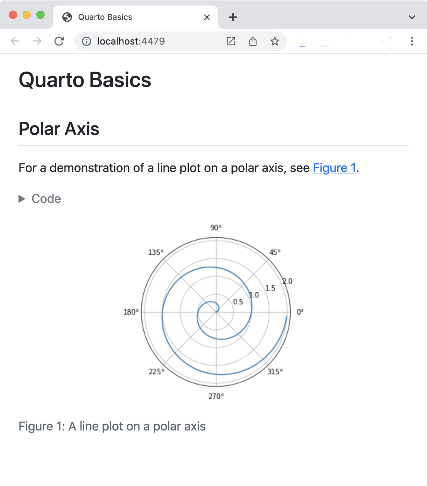
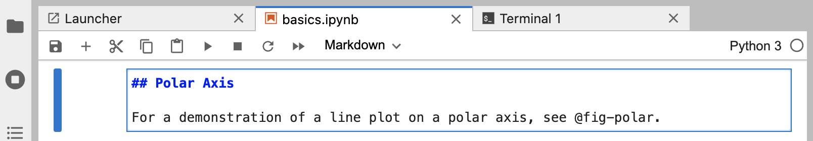

チュートリアル: Hello, Quarto
概要
このチュートリアルでは、QuartoでJupyter Labを使用する方法を紹介します。 他のノートブックと同じようにJupyter Labでコードやマークダウンを編集し、レンダリングされたドキュメントをWebブラウザでプレビューしながら作業を行います。
以下は、その概要です。

左のノートブックは、右のHTMLバージョンにレンダリングされています。 これはQuarto出版の基本モデルです。ソースドキュメント（この場合はノートブック）を受け取り、HTML、PDF、MS Wordなどのさまざまな出力フォーマットにレンダリングします。
このチュートリアルではPythonを使用していますが、Juliaの使用（IJuliaカーネル経由）も十分にサポートされていることに注意してください。 詳細は、Using Julia の記事を参照してください。
レンダリング
まず、Jupyter Lab でノートブック (hello.ipynb) を開き、いくつかのフォーマットにレンダリングするところから始めます。 自分の環境でステップバイステップで進めたい方は、以下からノートブックをダウンロードしてください。
次に、作業用の新しいディレクトリを作成し、このディレクトリにノートブックをコピーします。
この後、ターミナルでこのディレクトリに移動し、ノートブックの依存関係をインストールし、Jupyter Labを開いてノートブックでの作業を開始します。 インストールとJupyter Labの起動に使用できるコマンドは以下のとおりです。
| Platform | Commands |
|---|---|
| Mac/Linux | |
| Windows | |
Jupyter Labで作成したノートブックがこちらです。
---
title: "Quarto Basics"
format:
html:
code-fold: true
jupyter: python3
---
For a demonstration of a line plot on a polar axis, see @fig-polar.
```{python}
#| label: fig-polar
#| fig-cap: "A line plot on a polar axis"
import numpy as np
import matplotlib.pyplot as plt
r = np.arange(0, 2, 0.01)
theta = 2 * np.pi * r
fig, ax = plt.subplots(
subplot_kw = {'projection': 'polar'}
)
ax.plot(theta, r)
ax.set_rticks([0.5, 1, 1.5, 2])
ax.grid(True)
plt.show()
```
次に、Jupyter Lab 内に Quarto コマンドに使用する Terminal を新規に作成します。

そして最後に、ノートブックをいくつかの形式にレンダリングします。
Terminal
quarto render hello.ipynb --to html
quarto render hello.ipynb --to docxターゲットファイル（この場合は hello.ipynb ）は常にコマンドラインの一番最初の引数でなければならないことに注意してください。
QuartoでJupyterノートブックをレンダリングすると、ノートブックの内容（コード、マークダウン、出力）がプレーンなマークダウンに変換され、Pandocで処理されて、完成したフォーマットが作成されるのです。

オーサリング
quarto render コマンドは、配布用の最終版のドキュメントを作成するために使用されます。 しかし、オーサリング中は quarto preview コマンドを使用します。 今すぐターミナルから hello.ipynb を使って試してみてください。
Terminal
quarto preview hello.ipynbこれにより、文書がレンダリングされ、ウェブブラウザに表示されます。

Jupyter Labとブラウザのプレビューを並べて配置し、作業中の変化を確認するとよいでしょう。
ライブプレビューを実際に見るには:
thetaを定義しているコードの行を以下のように変更します。theta = 4 * np.pi * rコードセルを再実行すると、新しいバージョンのプロットが生成されます。
ノートブックを保存します（プレビューは自動的に更新されます）。
これがQuartoでオーサリングする際の基本的なワークフローです。
ノートにはいくつかの種類のセルがありますが、それぞれのセルについて少し考えてみましょう。
YAMLオプション
マークダウンとコードのセルはすでにおなじみでしょうが、ドキュメントレベルの YAML オプションに使われる新しいタイプのセル (“Raw”) があります。
---
title: "Quarto Basics"
format:
html:
code-fold: true
jupyter: python3
---
code-fold オプションを false に変更してみてください。
format:
html:
code-fold: falseそして、ノートブックを保存してください。 以前はコードを表示するための Code ボタンで隠れていたのが、プロットの上に表示されるようになったことに気づくはずです。
マークダウンセル
マークダウンセルはレンダリング中にQuartoに渡される生のマークダウンを含みます。 これらのセルには有効なQuarto マークダウン構文 を使用することができます。 ここではヘッダーと、下のコードセルで作成された図への相互参照を指定しています。
## Polar Axis
For a demonstration of a line plot on a polar axis, see @fig-polar.
ヘッダーを変更し、ノートブックを保存すると、プレビューに新しいヘッダーテキストが反映されます。
コードセル
下図のようなコードセルは、すでにご存知の方も多いと思います。
```{python}
#| label: fig-polar
#| fig-cap: "A line plot on a polar axis"
import numpy as np
import matplotlib.pyplot as plt
r = np.arange(0, 2, 0.01)
theta = 2 * np.pi * r
fig, ax = plt.subplots(
subplot_kw = {'projection': 'polar'}
)
ax.plot(theta, r)
ax.set_rticks([0.5, 1, 1.5, 2])
ax.grid(True)
plt.show()
```しかし、コードセルの上部には、 label と fig-cap オプションという、いくつかの新しいコンポーネントが存在します。 セルのオプションは、特別なプレフィックス付きのコメント (#|) を使用して YAML で記述されます。
この例では、セルオプションは図を相互参照できるようにするために使用されています。 fig-capやコードを変更し、セルを実行し、ノートブックを保存すると、更新されたプレビューを見ることができます。 出力を調整するために適用できるセルオプションは多岐に渡ります。 これらのオプションについては、次のチュートリアルで掘り下げて説明します。
図形のための特に便利なセルオプションは fig-alt で、これは視覚障害のあるユーザーのために画像に代替テキストを追加することができるようにするものです。 詳しくは Amy Cesal の記事 Writing Alt Text for Data Visualization を参照してください。
次
これで、Quarto ドキュメントの作成とオーサリングの基本がおわかりいただけたと思います。次のチュートリアルでは、Quartoをより深く掘り下げていきます。:
チュートリアル：計算 — 実行可能なコードブロックの動作と出力を調整する方法について学びます。
Tutorial: Authoring — 出力フォーマットや、引用、相互参照、高度なレイアウトなどのテクニカルライティング機能についての詳細です。